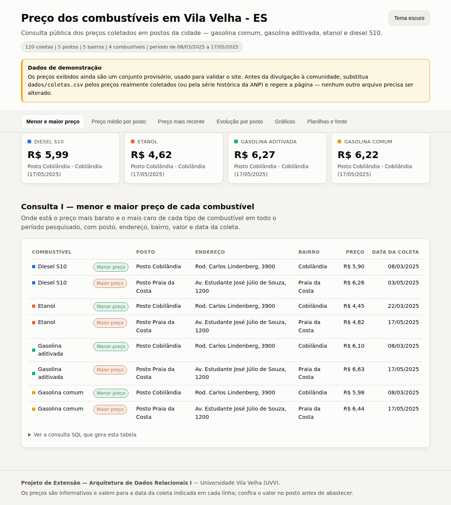
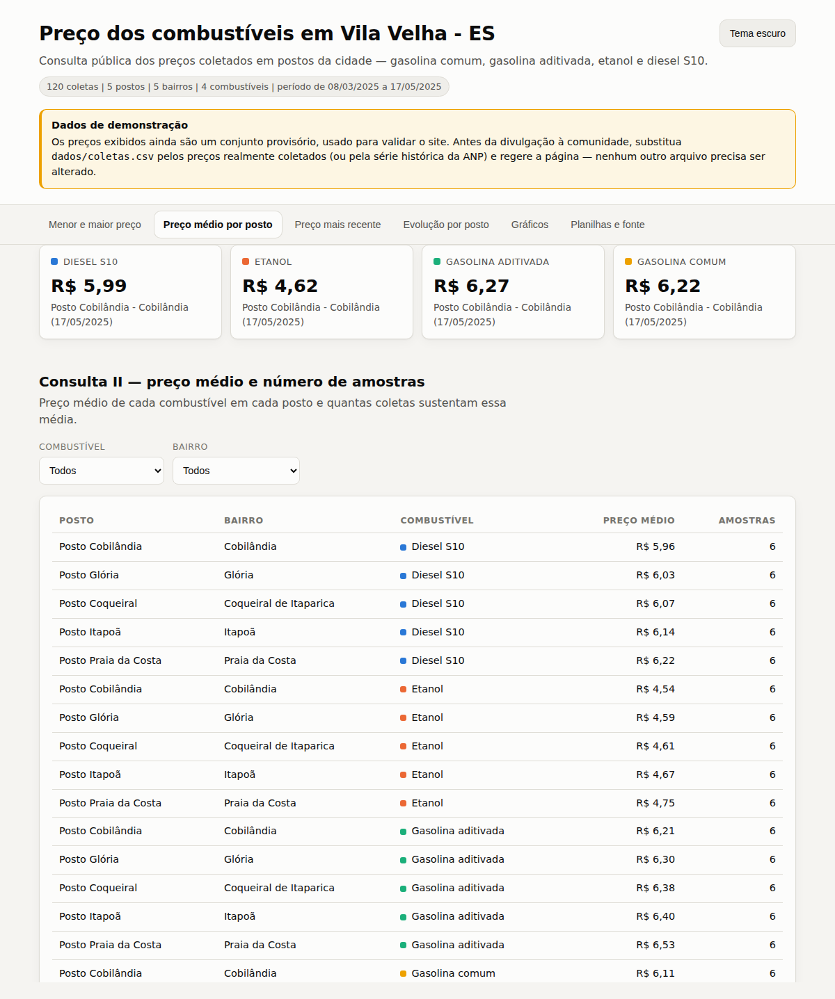
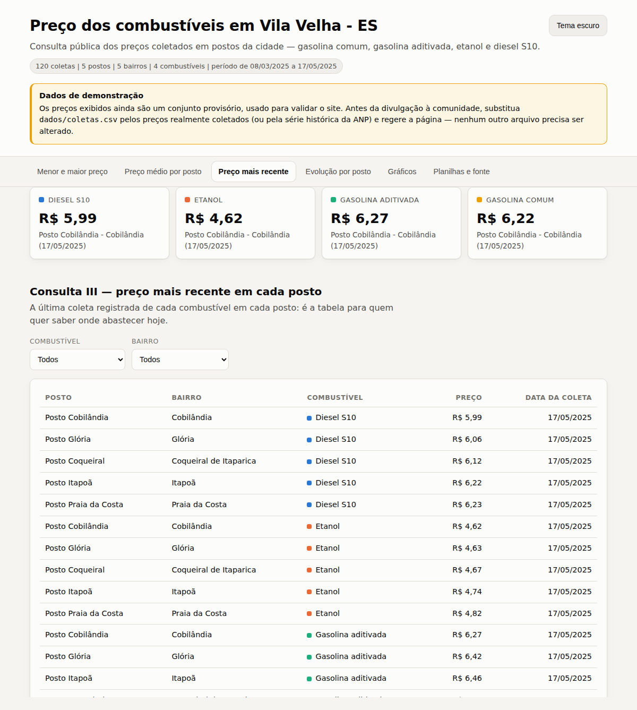
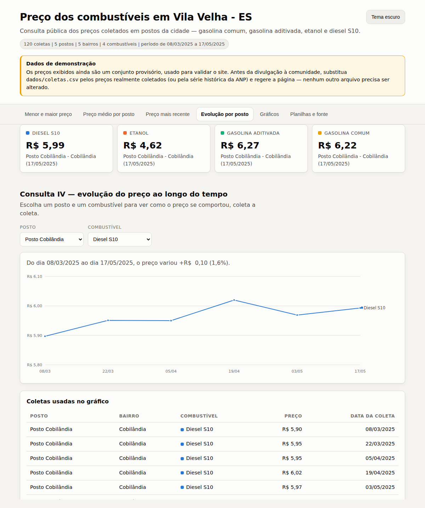
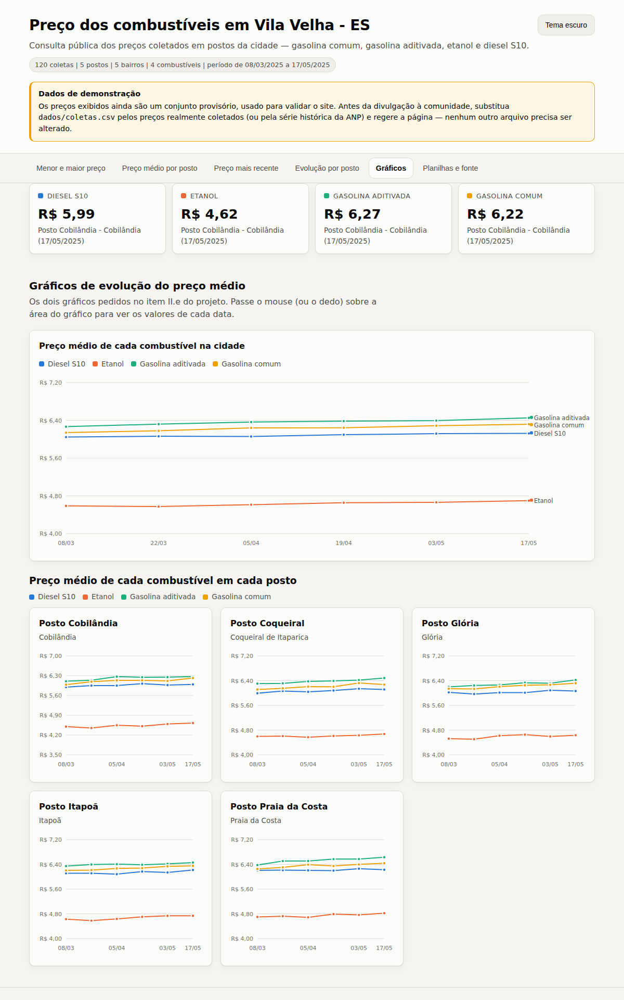
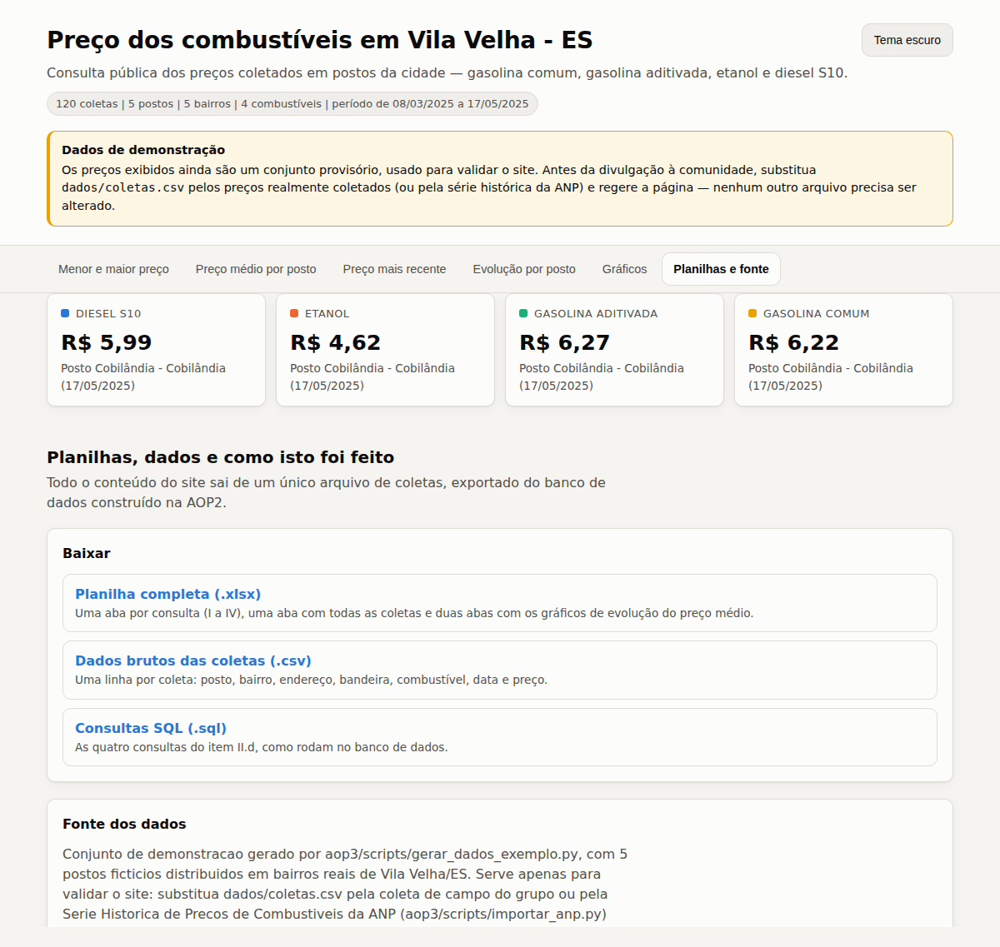

| Integrante | Matrícula |
|---|---|
| [NOME COMPLETO DO INTEGRANTE 1] | [MATRÍCULA] |
| [NOME COMPLETO DO INTEGRANTE 2] | [MATRÍCULA] |
| [NOME COMPLETO DO INTEGRANTE 3] | [MATRÍCULA] |
| [NOME COMPLETO DO INTEGRANTE 4] | [MATRÍCULA] |
| [NOME COMPLETO DO INTEGRANTE 5] | [MATRÍCULA] |
Este relatório apresenta as evidências da terceira etapa (AOP3) do Projeto de Extensão da disciplina Arquitetura de Dados Relacionais I: a divulgação, para a comunidade de Vila Velha - ES, das informações de preço de combustíveis armazenadas no banco de dados relacional construido nas etapas anteriores (AOP1 — projeto conceitual; AOP2 — projeto lógico e físico).
A base publicada reúne 120 coletas de preço realizadas em 5 postos distribuídos por 5 bairros (Cobilândia, Coqueiral de Itaparica, Glória, Itapoã, Praia da Costa), para 4 combustíveis (Diesel S10, Etanol, Gasolina aditivada, Gasolina comum), entre 08/03/2025 e 17/05/2025. Cada posto tem coletas em datas diferentes, atendendo aos requisitos do item II do enunciado.
[ATENÇÃO: os preços publicados ainda são o conjunto de demonstração. Substitua dados/coletas.csv pela coleta real do grupo (ou pela importação da ANP), rode gerar_site_e_planilhas.py com DADOS_DE_DEMONSTRACAO = False e gere este relatório de novo antes de entregar.]
Entre as opções previstas no enunciado, o grupo adotou a opção (a): criação de um website aberto ao público, no qual qualquer pessoa — sem conhecimento técnico e sem instalar nada — consulta os preços coletados diretamente do navegador do celular ou do computador.
A escolha se justifica por três motivos: (i) o site responde a todas as consultas exigidas no item II.d de forma interativa, com filtros por combustível, bairro e posto; (ii) permanece disponível permanentemente, podendo ser atualizado a cada nova coleta, diferentemente de um cartaz; e (iii) o endereço pode ser compartilhado em grupos de mensagens e redes sociais do bairro, ampliando o alcance da ação de extensão.
Endereço público do site: [PREENCHER: endereço público do site, ex. https://usuario.github.io/...]
A página inicial destaca o menor preço atual de cada combustível e organiza o conteúdo em seis seções: as quatro consultas obrigatórias, os gráficos de evolução e a área de download das planilhas e dos dados abertos. As figuras a seguir registram o site publicado e em funcionamento.






Além da publicacao do site, o grupo divulgou o endereço nos canais listados abaixo. As imagens seguintes comprovam essa divulgação.
| Canal / local | Data | Público alcancado | Observação |
|---|---|---|---|
| [Ex.: grupo de WhatsApp do bairro X] | [dd/mm/aaaa] | [nº de pessoas] | [como foi feito] |
| [Ex.: perfil do grupo no Instagram] | [dd/mm/aaaa] | [nº de visualizacoes] | [link da publicacao] |
| [Ex.: mural da associação de moradores] | [dd/mm/aaaa] | [público estimado] | [cartaz com QR Code do site] |
[PENDENTE: coloque aqui as evidências da divulgação — prints das publicacoes, fotos do cartaz afixado, conversas de compartilhamento, lista de presenca. Basta salvar as imagens em aop3/relatorio/evidencias/ (legendas opcionais em legendas.csv, no formato arquivo;legenda) e rodar este script de novo.]
[PREENCHER: comentários, dúvidas e sugestões recebidas; numero de acessos ao site, se houver medição; relato de moradores que usaram a consulta antes de abastecer.]
A etapa cumpriu o objetivo de levar a informação produzida no banco de dados para fora da sala de aula: os preços coletados deixaram de ser um conjunto de tabelas e passaram a ser uma consulta publica, gratuita e de leitura simples, capaz de ajudar o morador a decidir onde abastecer. O mesmo material tambem ficou disponível em planilha, para quem preferir analisar os números por conta própria.
dados/coletas.csv. A Série Histórica de
Preços de Combustíveis da ANP pode ser importada com aop3/scripts/importar_anp.py.aop3/site/ — HTML, CSS e JavaScript sem dependências externas; as quatro
consultas do item II.d são executadas sobre os mesmos dados do banco, e as consultas SQL
equivalentes ficam visíveis em cada secao da página.aop3/scripts/gerar_site_e_planilhas.py gera os arquivos de
aop3/planilhas/, incluindo a planilha única com as quatro consultas e os dois gráficos
exigidos no item II.e.aop3/scripts/gerar_relatorio.py, que captura automaticamente as
telas do site publicado e reúne as evidências da divulgação.Relatório gerado em 22/09/2026.